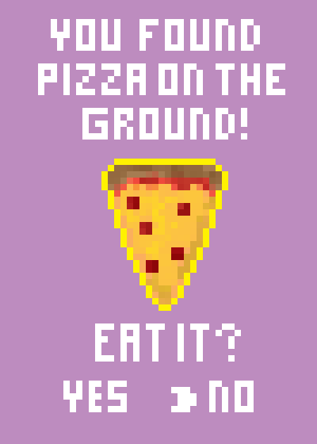

If you ever want to exchange recipes you can email me at jholson.webdev@gmail.com!
This is my recipe main page. There will eventually be links to different food items that I enjoy cooking. Hope you enjoy!
I’ve always loved to cook ever since I was young. I like learning about foreign countries and their cuisine and history. I’ve worked in hotels and catering companies almost all of my adult life. Even though the pay/benefits were awful, I felt that doing what I enjoyed was more important to me. A few years I had to find a new line of work due to personal health issues. It was a difficult transition at first but I ended up finding a job working at a market selling imported cheese and wine/beer/spirits. Plus I still get to cook at home which is an important part of my routine. I find it relaxing to come home at night and make something while I have a small drink.
Right now I’m getting more into learning Thai food. So many delicious dishes from there I want to try. I would love to visit there someday and go on a street-food tour. It can be very difficult to find the right Asian ingredients where I live, but I try not to let that stop me. ;^)